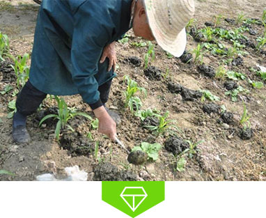
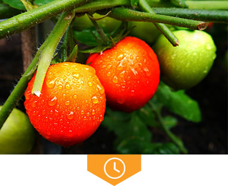
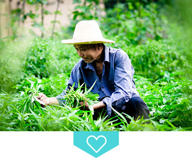

环境原则
周边无化工厂
无污染的生长环境
种植原则
不求规模化，但求品质
首选天然、健康食品
时间原则
遵循大自然自然生长的
天然、健康食材
品质原则
当天采摘，当天配送
从田间直达消费者
健康原则
只用有机肥
不使用化学农药、化肥
转基因、除草剂、激素
监督原则
参与种植、亲身体验
放松心情

健康，是我们不变的承诺
农爸比的菜园，只用有机肥，不使用
化学农药、化肥、转基因、除草剂、激素
一切遵循自然的生长规律，只为了家人的健康

美味，用时光慢慢养成
足时生长，不种反季节
在时光的滋润下自然孕育，自然成熟

品质，源于用心
只采摘最新鲜的部分，精心挑选每一颗
24小时从田间直达你的餐桌
开启每一天的健康生活